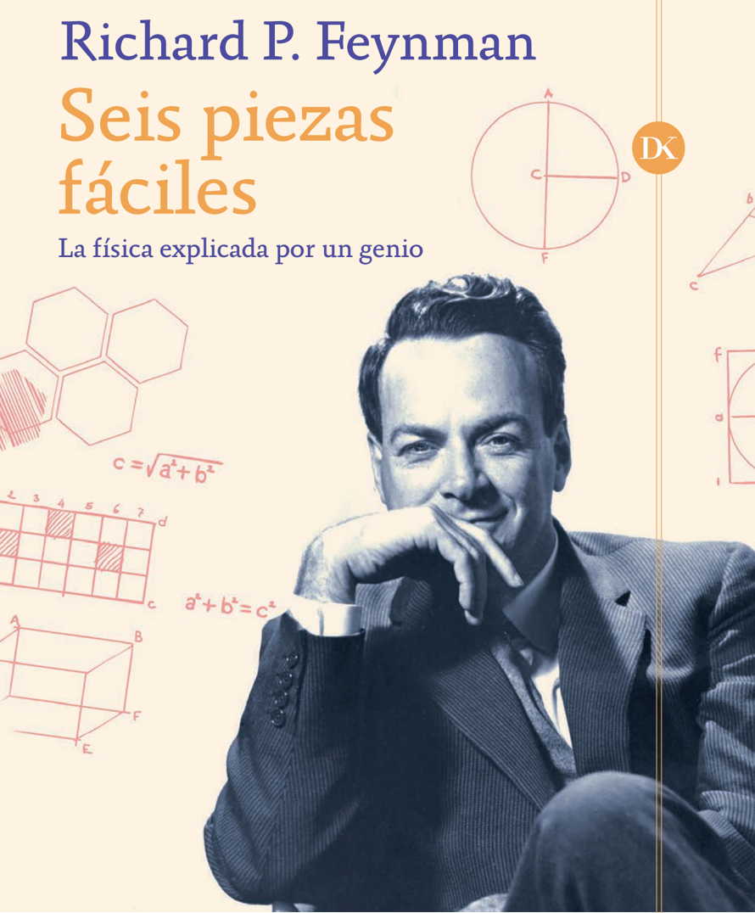
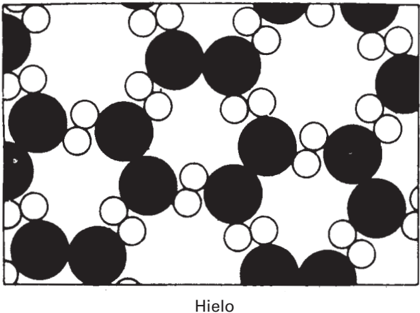
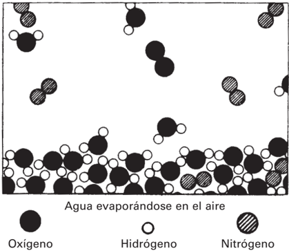
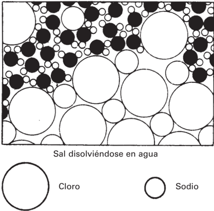
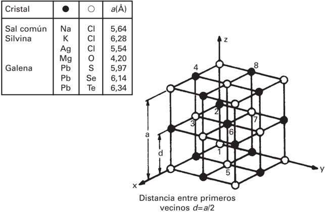
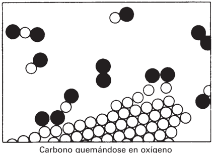
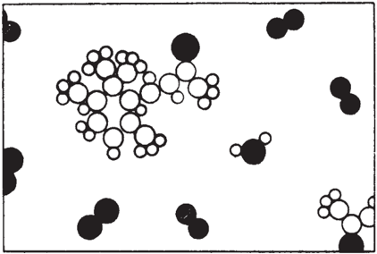

El capitulo propone una idea madre: todo esta hecho de atomos en movimiento perpetuo. Con esa sola imagen, Feynman explica calor, fases de la materia, presion, evaporacion, disolucion, reacciones quimicas, olor, evidencia experimental y hasta la continuidad entre fisica, quimica y biologia.
Idea Central
Si hubiera que salvar una sola frase de la ciencia, Feynman elegiria la hipotesis atomica: las cosas estan hechas de pequenas particulas que se mueven siempre, se atraen a cierta distancia y se repelen al comprimirse demasiado.
La fuerza del capitulo esta en mostrar que esa imagen no es una definicion seca: es una maquina explicativa. Permite razonar por que el agua fluye, por que el hielo es rigido, por que un gas presiona, por que evaporar enfria y por que una llama libera energia.
Mapa Del Capitulo
1. Ciencia como aproximacion
Feynman abre recordando que las leyes fisicas son aproximaciones que sobreviven mientras el experimento las confirme. Aprender fisica es construir mapas cada vez mejores, no memorizar dogmas definitivos.
2. La materia no es continua
La gota de agua parece lisa, pero al imaginarla ampliada aparecen moleculas moviendose, atrayendose y chocando. El calor es esa agitacion interna.
3. Estados de la materia
En el vapor, las moleculas estan separadas y chocan con las paredes: eso produce presion. En el hielo, las moleculas ocupan posiciones ordenadas y vibran en una red.
4. Procesos dinamicos
Evaporacion y disolucion no son hechos estaticos: moleculas entran y salen continuamente. El equilibrio ocurre cuando las salidas y regresos se compensan.
5. Quimica como reordenamiento
Una reaccion quimica cambia companeros atomicos. Quemar carbono en oxigeno libera energia porque las nuevas uniones son energeticamente mas favorables.
6. Evidencia y alcance
Movimiento browniano, cristales y rayos X apoyan la imagen atomica. Feynman remata extendiendo la idea a la biologia: lo vivo tambien son atomos obedeciendo leyes fisicas.
Conceptos Para Recordar
| Concepto | Como lo explica Feynman | Lectura rapida |
|---|---|---|
| Calor | Movimiento microscopico de atomos y moleculas. | Mas temperatura significa mas agitacion. |
| Presion de un gas | Golpes repetidos de moleculas contra las paredes o el piston. | Mas densidad o mas velocidad molecular eleva la presion. |
| Solido | Red ordenada donde los atomos vibran cerca de posiciones fijas. | La rigidez viene del orden de largo alcance. |
| Evaporacion | Moleculas de mayor energia escapan de la superficie. | Al irse las mas energeticas, el liquido se enfria. |
| Disolucion | Iones salen y regresan del cristal; el agua los estabiliza electricamente. | El equilibrio depende de tasas opuestas. |
| Reaccion quimica | Los atomos se recombinan y forman nuevas moleculas. | La energia liberada aparece como movimiento, calor o luz. |
Resumen En Una Linea
El mundo macroscopico que vemos quieto, solido o continuo es, por debajo, un escenario de particulas en movimiento: la fisica empieza cuando aprendemos a traducir lo visible en esa dinamica invisible.
Figuras Del PDF
Las imagenes vienen de pappers/libro_figures/images. Bajo cada una agrego una lectura breve para estudiar el argumento del capitulo.

Sirve como contexto bibliografico: el texto pertenece a una edicion castellana de Six Easy Pieces, una seleccion introductoria de las clases de Feynman.
Marca el inicio del material del libro antes del capitulo. No aporta contenido fisico, pero queda incluida para conservar el recorrido visual del PDF.

La imagen introduce el salto conceptual principal: lo que parece continuo esta compuesto por moleculas de agua, cada una con oxigeno e hidrogenos, moviendose y atrayendose.

En el gas las moleculas estan muy separadas. Esa separacion permite entender por que el vapor ocupa el recipiente y por que sus choques producen presion.

La presion aparece como promedio macroscopico de muchos impactos microscopicos. Si comprimimos el gas, los choques con el piston pueden aumentar la velocidad molecular y calentar el sistema.

El hielo muestra la diferencia entre liquido y solido: las moleculas quedan ordenadas en una estructura rigida, aunque siguen vibrando. La red abierta ayuda a explicar la expansion del agua al congelarse.

La superficie no esta quieta: algunas moleculas escapan y otras regresan. Si se retira el aire humedo, regresan menos moleculas y la evaporacion neta aumenta; por eso soplar enfria.

El agua separa iones del cristal por atraccion electrica: los hidrogenos se orientan hacia el cloro negativo y el oxigeno hacia el sodio positivo. La disolucion tambien es un equilibrio dinamico.

La figura recuerda que no toda sustancia se organiza naturalmente en moleculas aisladas. En la sal solida hay una red de iones sodio y cloro mantenida por atraccion electrica.

Una reaccion quimica cambia las asociaciones entre atomos. Cuando carbono y oxigeno forman nuevas moleculas, la energia liberada se transforma en movimiento molecular, calor y a veces luz.

El olor se vuelve una explicacion atomica: una molecula especifica viaja por el aire y llega por azar a la nariz. La percepcion se apoya en formas moleculares concretas.

La formula quimica es una forma compacta de dibujar una arquitectura atomica. Feynman usa este ejemplo para mostrar por que los nombres quimicos pueden ser largos: intentan describir estructura, no solo etiqueta.